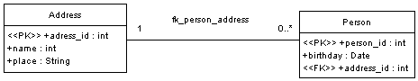

Modelling a table
A table can be modelled using an UML class. The sample table contains a primary key
attribute, and the attributes "name" and the "place". The attribute address_id is
of the stereotype <<PK>>. That way it is marked as part of the primary
key of this table.
Modelling a relationship
In the following diagramm you can see two tables. Each was modelled as described
above. There already exists an association named "fk_person_address" between these
tables. There is exactly one address for any person. And one address can be used
by zero, one ore more persons.
The next step is to add a foreign key attribute to the table "Person". This will be
used to realise the relationship in a relational database. A foreign key attribute
is an attribute with the stereotyp <<FK>>.

Now we must tell ArgoUML what relationship this foreign key attribute is referring.
To accomplish this we need to define a tagged value for this attribute. The tag name
must be "association_name", the value must be "fk_person_address" - the name of the
relationship.